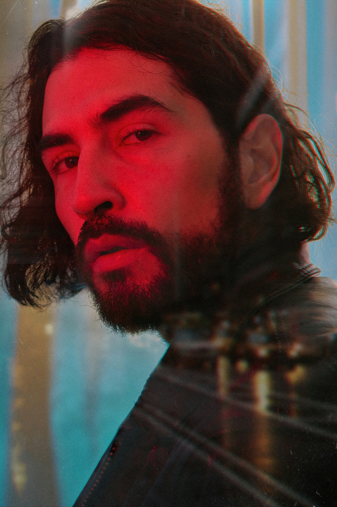

Ami Gautier
Ami Gautier is a photographer and artist known for his nostalgic and poetic style, creating a
mystical atmosphere that manages to immerse the viewer in each photograph.
Ami is a lover of mountains, trees, rivers, plants and has managed to merge his love for nature
and poetry in his photographic work.
He spends a lot of time choosing the places, colors and details in his photographs to recreate
them as he imagines them in his head. He is able to choose everyday scenarios and transform them
into dreamlike moments.